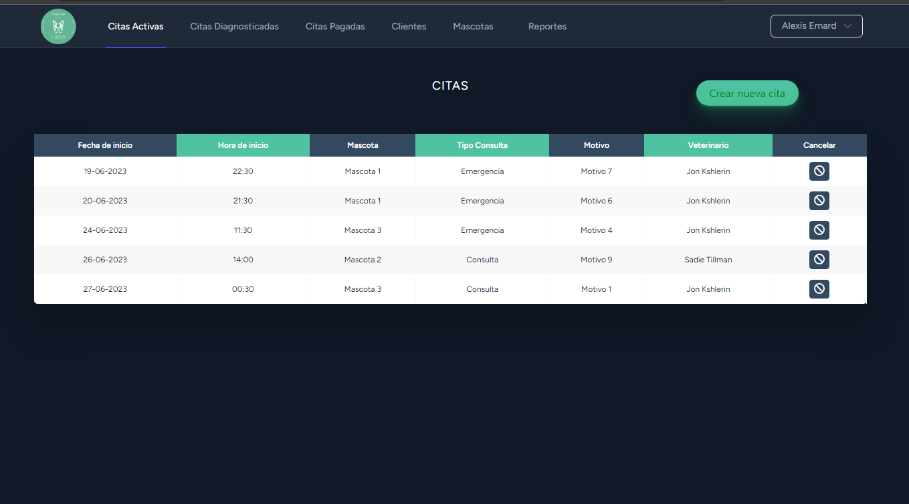
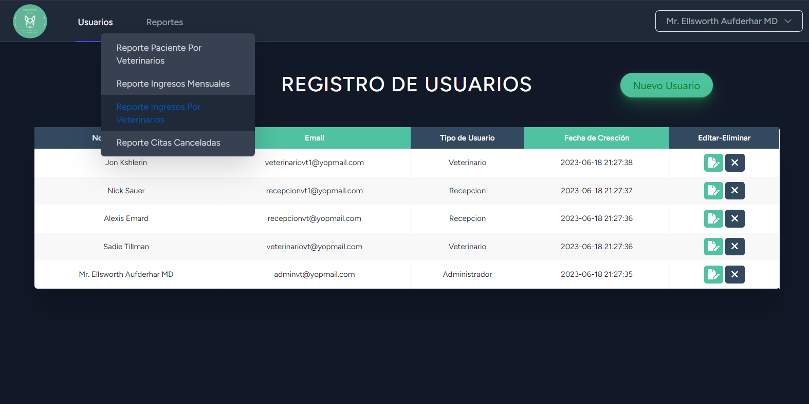
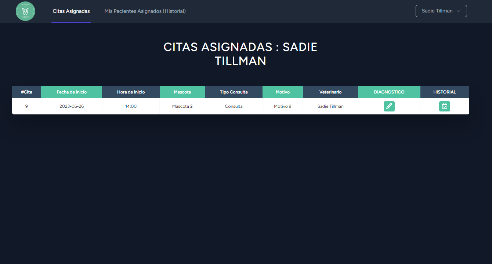

Sistema Web para Veterinaria



Laravel 10
- Php Blade Livewire Bootstrap JS MySQL
- Repo URL: veterinariaapp
users: adminvt@yopmail.com, recepcionvt@yopmail.com, veterinariovt1@yopmail.com pass: 123456789 La clínica veterinaria C.I.O solicito una aplicación que le permita administrar todas sus consultas y pacientes. Inicio de Sesión por Roles de Usuarios(Admin, Recepcionista, Veterinario), registros de Usuarios, Clientes, Mascotas, Se realizan Citas, ademas de varios tipos de Reportes en PDF.
Algunos requerimientos:
- • Se requiere que los usuarios de la solución puedan iniciar sesión mediante un usuario y contraseña. Ningún usuario podrá visualizar ninguna pantalla ni realizar ninguna consulta si no ha sido validado su usuario y contraseña
- • Se requiere una pantalla que permita el registro de los datos más importantes de los clientes (humanos).
- • Se requiere una pantalla que permita el registro de los pacientes.
- • Se requiere una pantalla que permita generar una cita. Se debe registrar fecha, hora, veterinario asignado (no le deben chocar sus consultas), motivo de la consulta. Esta pantalla será utilizada por la persona recepcionista de la clínica.
- • Se requiere una pantalla en la que el veterinario pueda registrar su diagnóstico, sus indicaciones y el medicamento recetado. Cada veterinario solo podrá ver la lista de pacientes asignados.
- • Se requiere una pantalla donde la persona encargada de recepción pueda dar de alta al paciente y hacer el cobro respectivo al cliente. Esta pantalla solo la podrá visualizar el usuario con el privilegio.
- • Los clientes pueden solicitar la programación de futuras citas (no necesariamente deben asignar al veterinario).
- • Se requiere un módulo para la generación de reportes. Este módulo solo lo podrá visualizar un usuario con el privilegio.
- • El historial médico de cada paciente debe quedar registrado y disponible siempre